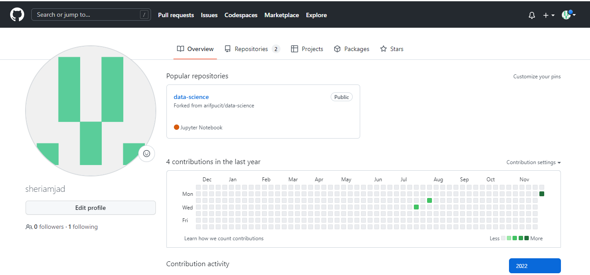
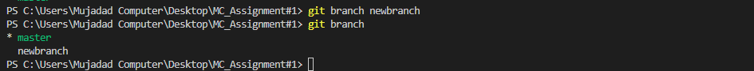

GITHUB DETAILS
GitHub
GitHub is a code hosting platform for collaboration and version control.
GitHub essentials are:
- Repositories
- Branches
- Commits
- Pull Requests
- Git (the version control software GitHub is built on)

Initializing Git Repository
Create a new local repository. If [project name] is provided, Git will
create a new directory name [project name] and will initialize a
repository inside it. If [project name] is not provided, then a new
repository is initialized in the current directory.
Command: git init

Adding Files
Thr files can be added to the staging area using git add command.
Command: git add index.html

Commit
To record or snapshot the file permanently in the version history we use the commit command.
Command: git commit -m "adding index.html"
Checking Status
To list all the files that have to be committed we use git status command.
Command: git status

Adding Remote Repository
To add a new remote, use the git remote add command on the terminal, in the directory your repository is stored at.
The git remote add command takes two arguments:
- A unique remote name, for example, “origin”
- A remote URL, which you can find on the Source sub-tab of your Git repo
Command: git remote add origin https://github.com/sheriamjad/GitDetailWebPage_A-1.git

Pushing in Remote Repository
The git push command is used to upload local repository content to a remote repository. Pushing is how you transfer commits from your local repository to a remote repo. It's the counterpart to git fetch ,
but whereas fetching imports commits to local branches, pushing exports commits to remote branches.
Command: git push -u origin master

Listing version history
To list the version history for the current branch we use the command git log.
Command: git log

Git Branch
This command lists all the local branches in the current repository.
Command: git branch

Creating new Branch
To create the new branch we will run the git branch newbranch
Command: git branch [branch name]

Merge New Branch
This command merges the specified branch history into the current branch.
Command: git merge [newbranch name]

Git Show
This command shows the metadata and content changes of the specified commit.
Command: git show [commit]